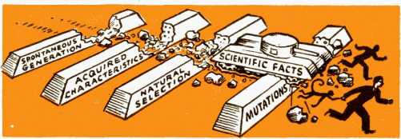
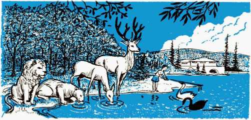
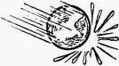

EVOLUTION
VERSUS
THE NEW WORLD “Prove all things; hold fast that which is good.” Can you prove your faith? If it is in evolution, can you found it on fact? If it is in the Bible, can you establish it in truth? This booklet tests the evidence for evolution, weighs the case for the Bible’s new world. The one is a bubble, the other a hope with firm foundation. Let this booklet help you to prove and hold fast that which is true.
—The Publishers
Copyright, 1950
WATCH TOWER BIBLE & TRACT SOCIETY
Publishers
Watchtower Bible and Tract Society, Inc.
International Bible Students Association Brooklyn, New York, U. S. A.
Made in the United States of America
VERSUS
JEHOVAH God promises a new world to bring mankind to perfection. Scientists offer evolution as the means of man’s ascent to new heights. The Bible declares that man was created perfect from dust, but sinned and degenerated, and that now his descendants can regain what he lost only through Christ’s millennial reign. Most scientists preach that all living things of earth evolved from a one-celled speck of protoplasm that somehow spontaneously generated itself in sea slime hundreds of millions of years ago. Evolution and the Bible collide head-on. Which survives the crash? Evolution versus the New World. Which wins the war?
Evolution is now accepted by many as a fact. Why? Because they have heard proof? Been struck by irrefutable evidence? No; the mass of evolution believers know little of the case for evolution. They merely know that scientists speak of it as a fact, universities teach it as a fact, the public press assumes it to be true, many modern clergymen accept it; and so in blind faith the bulk of evolution’s adherents swallow and follow, and parrot the propaganda line that any who hold fast to the Bible account are old-fashioned and unscientific.
But is evolution so modern? the Bible account unscientific? Are clergymen always right? the 3
4 EVOLUTION VERSUS THE NEW WORLD press never wrong? the universities infallible? And evolution’s star witnesses, the scientists—is it not true that the theories of scientists change like women’s fashions? that what is in high esteem today may be derided in contempt tomorrow? that it is seldom safe to be dogmatic on any of the changing theories of scientists?
If evolution has a strong case, it should welcome examination. But when evolutionists assume their theory proved, that it is no longer debatable, that only the ignorant will attack it; when they meet opposition with a haughty air of superiority, smear the Bible, and belittle the intellect of Bible believers—does not all that make evolution’s case suspect? Are such tactics necessary to cover over a weak case, or no case? Mature and proved science does not have to erect a psychological front to ward off inquiry, does not have to smear opposition to protect its discoveries. Then why does evolution? Because it is not mature science founded on fact. Hence an attack on evolution is not an attack on true science.
Like an onrushing tidal wave the evolution dogma fountains from the pens and lips of modern educators and floods from the high schools and colleges to overflow the entire globe. It threatens to drown weak Christian faith and wash it from the minds of many. But studious Christians whose faith is firmly anchored in the lasting wisdom of God’s Word will not be like the unstable waves of the sea that are driven and tossed and slapped about by windy blasts. (James 1:6, 8) Moreover, if the thinking Christian weighs the “scientific proofs” for the evolution theory, perhaps any waves of doubt to which it once gave rise will beat against his faith in vain. If evolution’s proofs are weighed on the balances of reason, perhaps the verdict will echo an ancient one: “Thou art weighed in the balances, and art found wanting.”—Daniel 5:27.
Classification, Comparative Anatomy, Embryology, Vestigial Organs and Blood Tests
By comparing the skeletons, muscles and nerves of different species of creatures the evolutionist notes similarity of structure. From this he argues that all evolved from a common ancestor millions of years ago. But by the time he traces all life back to this ancestor he has forgotten his comparative anatomy argument, for he does not find the skeleton, muscle and nerve counterparts in this single-celled beginning. Nevertheless, by an arbitrary arrangement or classification of many skeletal structures the evolutionist seeks to show a long, gradual line of ascent terminating in man.
The similarity of some neighbors in the line-up is undeniable, but the evolutionist is deceived by appearances. It is mere speculation to say that each one evolved from the one below it. Does the fact that all houses have floors, walls, roofs, windows and doors prove they are related by descent and heredity? or that their makers designed them for similar purposes? To argue by classification is like taking a small doghouse and lining up after it big doghouses, small shacks, cottages, large houses, mansions and castles, and then saying that the castles evolved from doghouses, because of the resemblance. And if you object to the analogy because all of these items are inanimate, we ask, Would it not be easier for one inanimate object to evolve into another inanimate object than for the inanimate to evolve into animate, as evolu-6 EVOLUTION VERSUS THE NEW WORLD tion claims by its spontaneous generation theory?
Reasoning logically, could it not be that the similarity that exists in creatures springs from a single Creator, who designed them for life on earth, with special adaptation to fit some for life in the air, or on the ground, or in water? Why would the Creator vary the make-up of bone and muscle and nerve in every living form, when these three substances perform similar purposes under similar conditions and are nourished by similar foods?
The more rash evolutionists claim that the human embryo passes through all the evolutionary stages, from single cell to man. The few months from conception to birth crowd in millions of years of living, as the fertilized human egg grows into fish, passes into reptile, thence mammal, into ape, and finally ends up a man-child. This wild contention was expounded by Ernest Haeckel, who said: “The history of the foetus is a recapitulation of the race.” Today few evolutionists champion such madness, but they cling to remnants thereof. They drop many stages, take short cuts, juggle the recapitulation to suit their fancy.
Most of them today claim only three stages are revealed: the fish stage, the tail stage, and the hair stage. They say human embryos have gill slits. Actually, these mere folds or arches become ear cavities, lower jaw and neck parts. Some claim the presence of a tail in the human embryo, but that it gradually reduces till at birth it is gone. To say that the human spine is a tail is absurd, specially when it is known that the intestine extends along this “tail”, near the end of which “tail” is the anal opening! What tailed animal ever had its intestines in its tail and elim-
EVOLUTION VERSUS THE NEW WORLD 7 mated from the tail’s tip? As for the hair stage, there is for a time extremely fine and soft hair that covers the embryo, known as lanugo or embryonal down. By time of birth it is about all lost, but persists throughout life on some parts, such as face and ears. Is that fuzz comparable to the coarse pelts of animals?
The well-known evolutionist, Sir Arthur Keith, said regarding embryology and evolution: “It was expected that the embryo would recapitulate the features of its ancestors from the lowest to the highest forms in the animal kingdom. Now that the appearances of the embryo at all stages are known, the general feeling is one of disappointment; the human embryo at no stage is anthropoid in its appearance.” Evolutionist William Bateson said to an assembly of scientists in America regarding proof for evolution from embryology: “Today we feel silence to be the safer course.”
Some structures in man and other higher forms of life are believed by evolutionists to be remains of structures once required by lower, ancestral forms, but which are no longer necessary to their present possessors. Such structures or organs are called vestigial organs. In man evolutionists used to point to some 180 such evolution leftovers, but as knowledge increased vestigial organs decreased, till today only a handful are usually mentioned. But many evolutionists hesitate to call any organs vestigial, and reputable doctors testify that each has its function. The late Professor E. S. Goodrich, of Oxford University, said: “He would be a rash man indeed who would now assert that any part of the human body is useless.”
Moreover, in his desperation to build a case for his theory, the evolutionist shuts his eyes to this crucial point: vestigial organs would not prove evolution, but would prove devolution, a backsliding evolution-in-reverse. What the evolutionists must prove is the acquiring of new and useful organs, not the uselessness of organs already existing. They must produce evidence of nascent organs, the beginnings of organs in process of evolving, the presence of half-formed organs. Vestigial organs, if any, are irrelevant.
Professor George Nuttall, of Cambridge University, developed a test for human blood that has proved useful in criminal investigation. A liquid called an anti-human serum was made, and when mixed with human blood caused a heavy white precipitate. But this precipitate was not formed when the liquid was mixed with the blood of chickens or rabbits, creatures low in the scale of evolution. When it was added to the blood of creatures close to man, such as monkeys, gorillas and chimpanzees, a precipitate was formed. To the evolutionist this similarity of blood meant one evolved from the other. But similar blood does not prove evolution, no more than the fact that both sewing needle and steam shovel are made of steel proves one evolved from the other.
There are other blood tests that show similarity. One shows close kinship between tiger and whale. The specific gravity test shows that the horse and pig are near to man, the frog and snake are nearer to man than the monkey, and mouse blood is precisely the same! If anything is more embarrassing than this equality between man and mouse, it is the result of the Nuttall test that shows chimpanzee blood more human than human blood! It is supposedly the amount of white precipitate that indicates humanness. The test on gorillas behaves nicely, gives less precipitate than in the case of humans, but, alas, chimpanzee blood gives more than does human blood. On the basis of this blood test, man would be the missing link between gorilla and chimpanzee! {After Its Kind, by B. C. Nelson)
The Missing Link
When evolutionists speak of the missing link, as though there were only one link missing, they are being coy. Scientist Anthony Standen, in his book Science Is a Sacred Cow, published 1950, says of the term missing link: “It is a most misleading phrase, because it suggests that only one link is missing. It would be more accurate to say that the greater part of the entire chain is missing, so much that it is not entirely certain whether there is a chain at all.” (P. 106) There are untold millions of links needed to connect modern man with a slimy mud puddle of millions of years ago. There are thousands needed to connect him with a primitive ape form the evolutionists do not even possess. They cannot forge a single link to connect any two of the hundreds of family groups. More embarrassing, they cannot produce even a starting point of life for their evolutionary chain reaction. Their first link is a missing link.
But unabashed, the evolutionist prattles on about the missing link between man and some primitive ape. He no longer contends that man descended from any existing ape, having abandoned the monkey myth so long taught with such 10 EVOLUTION VERSUS THE NEW WORLD cocksure arrogance. Nevertheless, he persists in inferring man’s relationship to ape by referring to supposed missing links as ape-men. He also clings to the ape theory in an effort to make his argument by classification stick, for when he arranges skeletons according to resemblance from fish to man he includes in the series chimpanzees and apes, though he admits that they do not belong in man’s ancestry. Such tactics are neither fair nor scientific.
But what about the missing links themselves? One of the most famous is called the Java man, or, to give it the name by which the scientist likes to impress the layman, Pithecanthropus erectus, which means an erect-standing ape-man. In 1891 Dubois discovered in river gravel a few fragments of a skull and some teeth. Later, at a point fifty feet distant, he found a thigh bone. From these bits, unjustifiably concluding that they came from the same animal, he built the Java man. But at the Third International Congress of Zoologists, at Leyden, Professor Virchow pointed out the obvious objection that while the skull fragment was chimpanzee or gibbon, the thigh bone was human, and the circumstances of their discovery indicated that they came from different creatures. This interpretation has been confirmed by other outstanding biologists.
Another missing link around which controversy has raged is the Piltdown man. It consists of skull fragments, a jawbone and a tooth. The skull is agreed to be human, but “the jaw and tooth belong to a fossil chimpanzee”, said Professor Hrdlicka in a Smithsonian report. Yet these unrelated parts were combined to give a human skull a chimpanzee jaw to produce “an impossible animal that could neither breathe nor eat”, according to Sir Arthur Keith. First the brain capacity of Piltdown man was conveniently estimated to be half way between that of man and ape, but scientific opinion differed so on this point that the builders of Piltdown man had to revise their figure, and today the brain size is generally conceded to be about 1,400 cubic centimeters, as large as many a resident of Piltdown today. The age of this missing link has generally been placed at some 500,000 years, but the September 17, 1949, Science News Letter shows how much trust can be put in the impressive array of zeros scientists recklessly tack on to their estimates of the ages of things: “Famous Piltdown man, long considered one of mankind’s oldest ancestors, is a mere anthropological infant, not more than 10,000 years old, Dr. K. P. Oakley of the British Museum disclosed to the British Association for the Advancement of Science.”
There is no need to continue detailing the discoveries of a tooth here, a leg bone there, and a skull fragment somewhere else, all of which scattered rubbish is brought together, sworn to belong together, and from which is constructed entire families of hunting ape-men. The large jaw of Heidelberg man is similar to some found among the Eskimos of today. In Peking man the evolutionists thought they had found what their theory needed, but people now living in Ceylon, the Ved-das, are very similar. Neanderthal man is a degenerate type of human and falls within the varieties of present-day man. Recent publicized discoveries of ape-men in Africa, such as Australopithecus and Plesianthropus, are admitted by their discoverers to be too young to be man’s ancestors.
The skulls of modem-type men have been found in many places and are older than the so-called missing links.
After mentioning this fact, Sir Arthur Keith said: “The majority of anatomists and geologists . . . simply refuse to believe in the authenticity of these discoveries because they run so contrary to our preconceptions.” Of the popularly known missing links Professor Keith says: “We may say at once that as geological record now stands, we cannot trace modern man back to any of these extinct types.” Professor W. Branco, of Berlin University, said: “Paleontology tells us nothing on the subject—it knows no ancestors of man.” Erich Wasmann, in Modern Biology and the Theory of Evolution, wrote: “The whole hypothetical pedigree of man is not supported by a single fossil genus or a single fossil species.” Professor Virchow declared: “The man-ape has no existence and the missing link remains a phantom.” In 1929 Austin H. Clark, biologist of the Smithsonian Institution, said: “Missing links are misinterpretations.”
The Record of the Rocks
Before going further, it is essential to clarify some key expressions. The first book of the Bible states created plants and animals reproduce “after their kind”. (Genesis 1:11,21,25) “Kind” does not refer to species, but compares more to the modern term family, such as dog family, cat family, man family. Wide variation within the kind allows many races and species to come from one pair of originally created kind, and which various forms within the kind or family are cross-fertile. But no variation crosses the Genesis kind boundary, and individuals from different kinds or fam-
EVOLUTION VERSUS THE NEW WORLD 13 ilies cannot reproduce. Incidentally, because of the wide variation within the kind, the comparatively few pairs of Genesis kinds carried through the Flood in Noah’s ark could thereafter give rise to the hundreds of thousands of different species in existence today. {Evolution, Creation, and Science, by Professor F. L. Marsh, 1947 edition) But the point here to remember is that when this booklet speaks of a family it means a Genesis kind, and not a species. With this clear, we proceed to consider the record of the rocks.
Many evolutionists claim that geology or paleontology gives strongest proof of their theory. In the older layers or strata of earth they find fossils of comparatively simple life forms. Down through the millions of years, they say, new layers were deposited and life was evolving, and all the while more fossils were being formed. In the more recent strata they claim to find the higher forms of life. This, they argue, proves evolution. However, the record in the rocks is strong circumstantial evidence of creation, for no slow evolving from family to family is found, but families remain constant and new families appear suddenly, with no hint of having gone through long periods of gradual development.
If evolution were true, life throughout the ages would have been drifting over in a continual stream from one form to another, taking millions of years to bridge family after family, and as untold millions of years passed new strata were being formed as fish became four-legged amphibians, which drifted over into reptiles, whose scales became feathers and front feet became wings, while other reptiles and amphibians became mammals, apes and men. Yet as these changing creatures 14 EVOLUTION VERSUS THE NEW WORLD lived and died for hundreds of millions of years and new strata were being deposited, no fossil has been found that clearly shows one of the millions of necessary transitional forms. Why not?
The reliable earth has preserved in fossil millions of creatures of families living today, and some extinct ones but which are not transitional forms. Why so many fossils of existing families, but no series of fossils showing evolution of new organs? or the changing of scales to feathers? or fins to feet? or feet to wings? or of fish getting hind legs or of snakes sprouting fur? Darwin attempted a feeble answer: “Geology assuredly does not reveal any such finely graded organic chain; and this perhaps is the most obvious and serious objection which can be urged against the theory. ’Die explanation lies, however, in the extreme imperfection of the geological record.” {Origin of Species, vol. 2, p. 49, 6th edition) Odd the record always suffers from “extreme imperfection” at those critical points where families are being bridged, yet is so perfectly adequate within each family.
And here is a most appalling blow to evolution. The fossil record begins in rock layers the geologists call “Cambrian”, estimated at some half a billion years of age. In these layers life first appears, bursting into the record of the rocks suddenly and in a great diversity of forms, sea creatures that give no hint of age-long periods of gradual development from shapeless protoplasm. In the pre-Cambrian rock layers, immediately beneath the Cambrian layers loaded with fossils, no fossils appear. Yet, evolutionists claim that life existed for a billion years before the time of the Cambrian strata. Why that claim, when they have no fossil evidence? Because they refuse to con-
EVOLUTION VERSUS THE NEW WORLD 15 sider special creation of life suddenly by Jehovah God, and must have that long period of time to allow evolution to evolve a speck of protoplasm into the great variety of highly organized life that suddenly appears in the Cambrian rocks.
Read what evolutionists say on this touchy point: “The first well-preserved assemblage of organisms is found in the Cambrian rocks, at the beginning of the Paleozoic era. But this is a time far along in earth history, and from the stage of development represented by the Cambrian animals and plants we can be sure that life had then already been in existence for a long time.” (Man and the Biological World, p. 352, published 1942) Why can they be sure life existed long before, when they have no evidence? They claim life started some one and a half billion years ago, but even they claim a fossil record of life for only a half billion years. Two-thirds of their record is missing, their beginning is a billion-year gap! What credulous faith they have in their religion of evolution! The following shows how diligently evolutionists have sought to fill the billion-year gap, to find some fact on which to found their faith:
In some regions, beds of almost unaltered Proterozoic sedimentary rocks [the layer just under the Cambrian] have been preserved. Here, if anywhere, we may expect to find the evidence of pre-Cambrian life, and many able paleontologists have searched long and carefully for fossils in these rocks. The results have so far been discouraging. The supposed fossils of lime-secreting algae which occur in abundance in some Proterozoic formations and which only a few years ago were cited as the oldest known organisms have lately proved to be of inorganic origin; and in spite of many hopeful announcements the reported discoveries of bacteria, protozoa and arthropods are without good foundation. The only fossils thus far identified with a fair degree
of certainty are those of certain annelid worms, and what may be sponge spicules. Because of this scarcity of fossils, the whole of the vast period of time represented by the Archeozoic and Proterozoic rocks has been called the cryptoeon, or the age of hidden life. —Man and the Biological World, pp. 352, 353.
Not very confidently, they speak of a meager and wholly inadequate record of pre-Cambrian fossils. On this point the textbook Outlines of Geology ruefully observes: “This is certainly not an impressive array to represent the life record of more than three-fourths of the history of the earth!” Geology leaves evolution up in the air, with no more foundation than a bubble in the breeze, with no other rooting for its evolutionary tree than a billion-year void.
Though evolutionists would force it to do otherwise, the record in the rocks proclaims that life appeared suddenly and in complex form, that new families abruptly entered upon existence, without apparent predecessors. The fossil record testifies that life does not cross the bounds of family groups, though varying widely within those boundaries. Paleontology proves that the first bats were true bats, the first whales were true whales, the first birds had perfectly formed feathers, and the first insects were well developed.
The late Lecomte du Nouy, well-known French scientist, in his book Human Destiny, published in 1947 and hailed as brilliant on the theory of evolution, said: “Each group, order, or family seems to be born suddenly and we hardly ever find the forms which link them to the preceding
EVOLUTION VERSUS THE NEW WORLD 17 strain. When we discover them they are already completely differentiated. Not only do we find practically no transitional forms, but in general it is impossible to authentically connect a new group with an ancient one.” He admits that reptiles appear suddenly, that they cannot be linked with any terrestrial ancestors, and makes the same admission regarding mammals. About birds he says they have “all the unsatisfactory characteristics of absolute creation”. (Pages 72,75,79)
Evolution’s Retreat Before Scientific Fact
Why does Lecomte du Nouy re^er the “characteristics IkI ® of absolute creation” as “un-
w w satisfactory”? Because to the
evolution-religion creation is heresy. To scientists, evidence for creation is an evil they refuse to see or hear or speak of. Consider these unscientific attitudes expressed by evolutionists. Sir Arthur Keith: “Evolution is unproved and improvable. We believe it only because the only alternative is special creation, and that is unthinkable.” Professor D. M. S. Watson, of the University of London: “Evolution itself is accepted by zoologists, not because it has been observed to occur or ... can be proved by logically coherent evidence to be true, but because the only alternative, special creation, is clearly incredible.” Yet the facts unearthed by scientific research harmonize with the Bible account of creation, and before these facts the stubborn adherents of evolution make retreat after retreat. Consider some of the withdrawals.
Evolution has no starting point, no living beginning for its evolutionary chain reaction. The ancients thought they had the answer in spontaneous generation of life from inanimate matter. Aristotle believed fleas, worms, mice, dogs and lower forms of life sprang up spontaneously from moist “Mother Earth”. This was believed for centuries, till the folly that life was generated in putrefying matter was exploded in 1668 by Redi, an Italian who discovered that maggots appeared in meat only after flies had deposited their eggs in it. When the microscope revealed the existence of bacteria (1683), the evolutionists insisted that the microscopic organisms spontaneously generated to give evolution its start; but Pasteur’s discoveries punctured that. Then starry-eyed evolutionists retreated beyond earth’s bounds, saying life came from another planet, via star dust
Retreating before the accumulating facts, the evolutionists were driven face to face with creation in their quest for life’s beginning, as their champion Darwin conceded: “I imagine that probably all organic beings which ever lived on this earth descended from some primitive form which was first called into life by the Creator.” But to admit one or a few creations is to admit the possibility of thousands. Hence the majority of evolutionists today shun the subject of how life began. In Man and the Biological World, page 202, it states that by the latter half of the nineteenth century “all biologists were convinced that spontaneous generation was definitely disproved for all forms of living organisms”. Lecomte du Nouy said in Human Destiny: “There is not a single fact or a single hypothesis, today, which gives an explanation of the birth of life or of natural evolution.” The very vital first link of the evolution chain is a missing link.
But granting evolutionists the starting point they do not have, how did the one-celled beginning evolve to manhood? Several explanations have been advanced, only to be discarded in the face of advancing knowledge. More than a century ago the French evolutionist Lamarck said that creatures acquired certain characteristics because of environment, which acquired characteristics were passed on to offspring, who developed them further, till eventually radical changes were effected and new species formed. The fallacy of Lamarck’s theory is that acquired characteristics are not inherited by offspring. As Life magazine, March 17, 1947, reported: “Until 1900 many biologists believed that characteristics plants and animals acquired from their environment were passed to their offspring. Modern genetics has proved they are not.”
Charles Darwin followed Lamarck, and said: “Heaven forfend me from Lamarck’s nonsense.” Darwin noticed variations in offspring from the same parent, in size, shape, color. He also noted the struggle for existence, and decided that useful variations survived while useless ones perished. On this he based his theory of natural selection through survival of the fittest. But variation of characteristics already present is one thing; to evolve an entirely new organ is something else. As Professor Lock, of Cambridge, said: “Selection, whether natural or artificial, can have no power in creating anything new.” Hugo de Vries said: “Natural selection may explain the survival of the fittest, but it cannot explain the arrival of the fittest.” Professor Coulter, of the University of Chicago, says: “The most fundamental objec-
20 EVOLUTION VERSUS THE NEW WORLD tion to the theory of natural selection is that it cannot originate characters; it only selects among characters already existing.”
Darwin himself said: “Natural selection acts only by the preservation and accumulation of small inherited modifications. ... If it could be demonstrated that any complex organ existed which could not possibly have been formed by numerous, successive, slight modifications, my theory would absolutely break down.” (Origin of Species, pp. 110, 277, 5th edition)
How could an eye, an ear, a heart or a lung develop by slight, accumulated modifications? Till complete, it would be useless; if useless, natural selection would deem it unfit to survive. In the rear part of spiders are highly specialized organs for spinning web, without which many spiders could catch no food. How did they survive the millions of years that these organs were evolving? If they gained food in other ways, why make the spinning organs? Natural selection would eliminate the useless, early modifications. If the mammary glands or breasts of animals that nurse their young evolved slowly over thousands or millions of years, how did the young survive during that time? If they were otherwise fed, why did the breasts, useless till complete, persist in developing? And why would sex organs, male and female, perfect complements of each other, run in a parallel yet independent development in different individuals, till of use some millions of years later? Half-completed useless organs would be in the way, and Darwin said that “any variation in the least degree injurious would be rigidly destroyed”. (Origin of Species, p. 63)
Today most evolutionists cast off Darwin’s folly. They have retreated from Darwinism, just as they previously had to retreat from the theories of inheritance of acquired characteristics and spontaneous generation. Discovered facts have finally forced them to see that families appeared suddenly, with “all the unsatisfactory characteristics of absolute creation”. Hence recent theories try to face the facts without having to face creation. They now preach mutations, or sudden changes.
Do Mutations Explain Evolution?
In 1929, Austin H. Clark, Smithsonian Institution biologist, said that there were no links to connect the major groups of animals, that “every developmental line has certain gaps”, and that “they are therefore natural, and not due to a deficiency in the record”. In the same year the February 16 issue of Literary Digest wrote:
Dr. Clark does not discard the theory of evolution; he modifies it. Instead of evolution by a process of gradual development, he believes it has come about by a series of jumps from one major form of life to another. He expresses his views in The Quarterly Review of Biology, a publication which has a limited circulation in scientific circles. “So far as concerns the major groups of animals,” he says, “the creationists seem to have the better of the argument. There is not the slightest evidence that any one of the major groups arose from any other. Each is a special animal-complex, related more closely to all the rest and appearing, therefore, as a special and distinct creation.” According to Dr. Clark’s belief, “man appeared in the Pliocene age, just preceding the ice age. He appeared suddenly and in substantially the same form as he is in today.”
Most evolutionists now try to explain the sudden appearance of the Genesis kinds by mutations. To understand this matter, it is necessary
22 EVOLUTION VERSUS THE NEW WORLD to state that in the nucleus of each body cell there is a certain number of small bodies called chromosomes, but in the germ cells (either sperm or egg) there is only half the normal number. Hence when sperm cell unites with egg cell that fertilized egg or new cell that will become a new individual has once more the normal number of chromosomes, having gained half from the mother and half from the father. That is why characteristics are inherited from both parents, for in each chromosome are thousands of genes, and it is the genes that determine heredity.
Because of the great number of genes and the almost countless gene combinations possible, there is an amazing degree of variation within each family. That is why, by careful selection of parent stocks, man has been able to breed such a variety of dogs, horses, cattle, chickens and other domesticated animals, as well as plants. But no new genes have been created, no characteristics foreign to the family have been introduced, but only qualities already present have been developed to the full. Mendel’s laws of heredity show a pattern of variation, but dogs are always dogs, cats cats, men men. One cannot get cats from dogs, or apes from men, or vice versa. Moreover, this wide variation within the family is often accomplished by conscious selection by men, not natural selection. Left to themselves in a wild state, these specialized varieties or breeds or species interbreed and soon revert to the original form. Why, the field of eugenics is based on the failure of natural selection to improve the family.
Having now some knowledge of genes and heredity, we consider mutations. It appears that the genes, the carriers of heredity, can undergo
EVOLUTION VERSUS THE NEW WORLD 23 changes, which changes are reflected in the hereditary make-up of the offspring. These changes are known as mutations, and are exceedingly rare in n&ture, occurring only once in thousands of matings. Since all other theories to explain evolution have ended up in the trashcan of discredited imaginations, it is to be expected that evolutionists grab at this straw to keep afloat their sinking theory. Could not a continuing series of small inheritable mutations gradually develop a new family? Or, perhaps by a flood of mutations, could not a new family be formed at one fell swoop? What do the experimental facts answer?
Extensive experiments have been conducted, specially with a fruit fly known as Drosophila. One of the world’s most famous geneticists and a confirmed evolutionist is Professor H. J. Muller, of the University of Indiana. He has bred 900 consecutive generations of fruit flies, the equivalent of 25,000 years of human reproduction. However, Muller discovered, in 1927, that by exposing parents to radiation, like X-rays, or gamma rays from radioactive materials, the mutations are increased many times. In the case of the fruit fly, some say the increase is as much as 150 times; a very conservative estimate is that mutations increased twentyfold. A great many of Muller’s fruit fly generations were subjected to radiations that thus greatly increased mutations over the normal rate, so that his experiments with Drosophila are equivalent to at least half a million years of human evolution. In that period of time all sorts of ape-men as well as modern men are supposed to have evolved.
What, then, happened to the little fruit fly during its equivalent of this time? Did it turn into a bumble bee or a June bug? No; it is still the same 24 EVOLUTION VERSUS THE NEW WORLD little fruit fly the geneticists started with, still undergoing mutations that change its eyes from red to white, and back again, that change its wings from long to short, and back again. The scientist's recognize that Drosophila is still nothing but a fruit fly, despite nearly a thousand generations of mutation-packed reproduction.
Since the building of atomic piles opportunities for observing mutations have greatly multiplied, and full advantage has been taken of these opportunities by scientific experimenters. But mutations have proved disappointing, useless to the evolution theory. Why so? Because mutations injure rather than improve the species. That is why scientists do not hail the atomic age as a means of increasing mutations to accelerate man’s evolution upward. That is why Life magazine, March 17, 1947, reported: “The radiation from the explosion of an atomic bomb is a geneticist’s nightmare. Some of them think that mutations among the Japanese exposed in Hiroshima and Nagasaki may plague the human race for thousands of years.” If “mutation is the prime power of evolution” that made a man from a one-celled ancestor in a mud puddle, how very strange that now mutation should be feared as a nightmare rather than hailed as a savior to boost man still higher!
The results of radiation and its delayed genetic effects were studied at the University of Washington under a grant from the Atomic Energy Commission. Fish were used in the experiments because they react to radiation in much the same way as higher vertebrates, including man. Reporting on the progress, Life magazine, November 21, 1949, published pictures of horribly deformed offspring of irradiated parent trout, and said:
Five years of tests have shown that radiation produces no abnormalities that do not occasionally show up in nature. But irradiated parents produce a much higher percentage of malformed offspring—as high as 59% following an X-ray dosage of 1,000 roentgens. No useful mutations have appeared, and none is anticipated. Biologist L. R. Donaldson, director of the study, explains, “So far as we know we’re not getting any good characteristics. You can’t add when you are subtracting.”
Those are the hard, cheerless facts facing the evolutionists who had hoped that their failing theory could gain salvation by mutations. From the fog of wishful thinking the firm fact emerges that neither acquired characteristics nor natural selection nor mutations can form new families. Muller’s study of mutations agrees with Donaldson’s, that minor mutations may occur and the offspring survive and reproduce, but that large mutations result in the death of the offspring. The small mutations weaken, the large ones kill, and no beneficial ones have yet appeared. While allowing for many varieties within a Genesis kind that interbreed and produce virile offspring, the Creator’s mechanism of the genes destroys the mutant that strays too far, and thus insures each family’s obeying God’s law and bringing forth “after its kind”. One after another the hypotheses behind which evolutionists entrenched themselves have
been smashed by advancing knowledge, and the continual retreats of the evolutionists rout their theory from the minds of sober thinkers.
Evolution Old-fashioned and Religious
Evolutionists take pride in their supposed modernism. They rocket ahead to pierce new frontiers of knowledge, not shackled by superstition, bound by myth, snared by religion, anchored by ignorance, nor stopped in their tracks by old-fashioned gullibility. And certainly they would never retard fast forward progress by hanging the Bible around their necks like a millstone! With smears and sneers they cast it aside as garbage for the mentally impoverished. With the haughty pride that precedes falls, the evolutionists congratulate themselves on their great wisdom and superiority. But just how modern is the evolutionist that scoffs at Bible believers?
Evolution was taught in the fifth century B.C. The Greek philosopher Empedocles (493-435 B.C.) has been called “the father of the evolution idea”, believed in spontaneous generation as the explanation of the origin of life, thought that organisms evolved gradually after much trial and error, and taught in rough form Darwin’s theory of survival of the fittest. Aristotle (384-322 B.C.) claimed that “man is the highest point of one long and continuous ascent”.—See The Encyclopedia Americana, vol. 10, p. 606,1942 edition.
It has been suggested that the Greek philosophers gleaned their evolution ideas from the Hindus, who have the soul transforming from one animal to another till it reaches the perfection of nirvana. Six hundred years before Christ the Mayan culture began, and its religion taught a
EVOLUTION VERSUS THE NEW WORLD 27 streamlined evolution, saying that the rain-god made man in this order: a river, a fish, a serpent, and then man. And did you know that savage tribesmen scattered throughout the earth have believed evolution from ancient times? They have totems, and the totem of a clan is generally a species of animal or plant. On this subject the Encyclopaedia Britannica, vol. 23, pp. 467, 476, edition of 1894, states:
The members of a totem clan call themselves by the name of their totem, and commonly believe themselves to be actually descended from it. Thus the Turtle clan of the Iroquois are descended from a fat turtle, which, burdened by the weight of its shell in walking, contrived by great exertions to throw it off, and thereafter gradually developed into a man. The Cray-Fish clan of the. Choctaws were originally cray-flsh and lived underground, coming up occasionally through the mud to the surface. Once a party of Choctaws smoked them out, and, treating them kindly, taught them the Choctaw language, taught them to walk on two legs, made them cut off their toenails and pluck the hair from their bodies, after which they adopted them into the tribe. But the rest of their kindred, the cray-fish, are still living underground. . . . Prof. Sayce finds totemism among the ancient Babylonians.
And is it not the evolutionist that is the gullible gobbler of fairy tales? Is it not the fairy tales that deal copiously with physical transformations? that tell of children turned into spiders and back again? of mice becoming horses and lizards becoming men to serve Cinderella? Of course, the evolutionist’s transformations are fables more cunningly devised, and instead of popping in on the wings of a witch’s spell or the wave of a fairy’s wand they steal in so slowly that in comparison a snail’s pace would appear as the lightning’s flash. Nevertheless, evolutionist W. Beebe writes in The Bird,
page 97: “The idea of miraculous change, which is supposed to be an exclusive prerogative of fairy tales, is a common phenomenon of evolution.” Dr. McNair Wilson, formerly editor of the Oxford Medical Publications, observed that evolution is “a theory which is as full of ogres, mermaids and centaurs as any fairy tale”.
Hence it is the evolutionist that is stuck with a superstitious myth out of the dim past, as improvable now as it was then. Why do most scientists accept this theory out of the bogs of antiquity? Because it is their religion, the orthodox belief of scientists, and they fear what fellow scientists would think if they did not conform to it. Unproved and improvable, evolution is a faith, a faith in fossils that do not exist, faith in missing links still missing, faith in vestigial organs not vestigial, faith in embryological evidence that is imaginary, faith in blood tests that refuse to behave and in comparative anatomy that proves nothing. It is a blind, credulous faith, a dead faith without works, a faith induced by fear, fear of what a smart world saturated with evolution might think. To prove orthodoxy many scientists become unscientific, and embrace the religion of the college-bred class of this twentieth century— evolution.
Some scientists try to cling to a shred of Bible belief along with their evolution religion. Extremists of this class are A. Cressy Morrison and Lecomte du Nouy. The former in his book Man Does Not Stand Alone contends that the Supreme Being will give us time so that ultimately man by evolution will develop into “pure spirit”. (Page 106) The latter in his Human Destiny, page 117, argues that present-day man is “the forerunner of the future race, the ancestor of the spiritually perfect man, of which Christ was, in a sense, the premature example, by emerging victorious from the fight. Thus Christ can be assimilated to one of the intermediary, transitional forms, perhaps a million years in advance of evolution.”
As some scientists try to weave the Bible in with evolution, so some clergymen seek to infiltrate evolution in with the Bible. There is an abundance of proof that the more modern-minded clergy are making an alliance between evolution and the Bible. In fact, some Catholic Church “saints” beat modern science to the theory. Under “Evolution” the Catholic Encyclopedia, vol. V, pp. 654,' 655, edition of 1909, says:
It is in perfect agreement with the Christian conception of the universe; for Scripture does not tell us in what form the present species of plants and of animals were originally created by God. ... To what extent is the theory of evolution applicable to man? That God should have made use of natural, evolutionary, original causes in the production of man’s body, is per se not improbable, and was propounded by St. Augustine. [Augustine of Hippo, A.D. 354-430]
The Catholic Digest, September, 1946, said: “There could have been pre-Adamic men, with animal bodies and rational souls.” Cardinal Achille
Leinart wrote in the Jesuit periodical
Etudes, December, 1947: “One can say
that paleontology has ... caught the inner movement of this history
IDOL OF THE EVOLUTION
[of life] under the as-
ARE THEY RIGHT IN SAYING ONE CAN BELIEVE IN BOTH? WHAT ABOUT YOU? CAN YOU BELIEVE BOTH? pect of a slow evolution which, starting from the most rudimentary stage, has produced beings of an increasing perfection, until it reached, in the person of man, the dawn of the spirit.”
Protestantism does not lag behind in accepting evolution. The Christian Century, July 7, 1948, ballyhooed evolution and claimed that the result of modern research has been “to establish more firmly than ever the doctrine of evolution”. Comfort, December, 1930, reported that a then recent Lambeth Conference of Anglican bishops adopted a resolution declaring that “evolution was accepted as a process of creative development consistent with Christian theology”. S. Parkes Cadman, D.D., lamented the “neglect of Christian theology to baptize the theory into faith”; also, “The Biblical account reflects the primitiveness of its age; the Darwinian explanation appears to me as the greatest I have ever known.” Harry Emerson Fosdick pressured for the theory by using the “tyranny of authority”, saying: “Our greatest teachers, as well as the poorest, those who are profoundly religious as well as those who are scornfully irreligious, believe in evolution.”
As for Judaism, the Jewish Encyclopedia, 1910 edition, vol. V, p. 281, says that the relation of Judaism to evolution is “not necessarily one of hostility and dissent”, that the Talmudical view of miracles is “not inherently irreconcilable with the hypothesis of evolution, while modem (Reform) Jewish theology is not concerned to defend the belief in miracles based on literal constructions of Biblical passages”.
When religious compromisers say evolution might have been used by God in creating, they ignore his expressed law that his creations bring forth offspring “after their kind”. The evolutionary doctrine can no more be proved from scientific fact than orthodox religion’s teachings can be proved from the Bible. Dazzled and flattered by the wisdom of men, both modern science and false religion are blind to the wisdom of God, blind to the truths of his Word, blind to the most vital knowledge of these days, that Bible chronology and signs of the times herald the incoming of a glorious new world of righteousness. You have viewed evolution’s case and weighed its proof; now open your eyes and see with unbiased mind the testimony concerning Jehovah as a Creator.
How Man Was Made
Please recall that evolutionists have declared that their theory is unproved and improvable, that it is believed by scientists only because the alternative is special creation, which they declaim as unthinkable and clearly incredible. But how certainly do the foregoing facts prove their improvable theory unthinkable and incredible! And just as certainly do the facts prove the alternative, special creation, to be true. All the evidence and human reason unite to cry out that Jehovah God created the heavens, the earth, the living creatures that swarm in its waters or fly through its atmosphere or roam over its land surface, and that creation of earthly life was climaxed by man’s formation from the dust! The Record reads:
In the beginning God created the heavens and the earth. And God said, Let the land put forth vegetation, herb yielding seed, fruit-tree bearing fruit after its kind, whose seed is within it, on the land. And it was so. And God created the great sea-monsters, and every living soul that moveth, with which the waters swarmed after their kind, and every winged bird after its kind.
32 evolution versus the new world . . . And God made the wild-beast of the land after its kind, and the tame-beast after its kind, and every creeping thing of the ground after its kind. And God saw that it was good. And God said, Let us make man in our image, after our likeness, and let them have dominion over the fish of the sea, and over the bird of the heavens, and over the tame-beast, and over all the land, and over every creeping thing that creepeth on the land. And God created the man in his own image, in the image of God created he him, male and female created he them. And God blessed them, and God said to them, Be fruitful and multiply and fill the earth, and subdue it . . . God formed man of the dust of the ground, and breathed in his nostrils the breath of life, and man became a living soul.—Genesis 1:1,11, 21,25-28; 2:7, Rotherham.
God used no evolution. He did not make man from a monkey or other previously created animal. He went directly to the dust, from it made the body of a mature man, and breathed into it the breath that set the life processes into operation. Thus man became a living soul, just as fish and birds and land animals before him had become living souls. The Record makes no mention of an immortal soul for man, but shows that man was subject to death, that at death he would return to dust like the beasts. (Genesis 2:17; 3:3,19; Ecclesiastes 3:18-20; 9:5,10; Ezekiel 18:4) As a potter molds vessels from clay, so Jehovah shaped man from dust; but perverse evolutionists say man was formed by unintelligent chance: “O the perversity of you! Is the potter of no more account than the clay? Shall the thing that is made say of its maker, ‘He made me not’; or the thing that is molded say of its molder, ‘He has no intelligence?’ ”—Isaiah 29:16, An Amer. Trans.
Man has learned much about the marvelous intricacy of man, how wonderfully man is made, with a digestive system that converts masticated food into body nutrition, with facilities for storing it, with a blood stream to distribute it, with a heart to pump the blood and lungs to purify that red stream of life, with a nervous system to carry messages to and from the brain, with a brain that directs bodily functions and movements and receives information from the five senses, and from these impressions can reason to sound conclusions and make its decisions known through speech, that knows right from wrong, and that has a conscience that pricks when evil is done. All bodily parts and powers, small and great, amaze by their intricacy; and wondrous indeed is the ability of a human pair to duplicate their fearfully made bodies by reproduction, by bringing forth “after their kind”. But as much as man knows about his organism, there is more that he does not know. Only his Creator understands all; man can only marvel. “For thou didst form my inward parts: thou didst knit me together in my mother’s womb. I will give thanks unto thee; for I am fearfully and wonderfully made: wonderful are thy works; and that my soul knoweth right well.”—Psalm 139:13,14, Am. Stan. Ver., margin.
Jehovah God had purpose in making man. The first pair were commissioned to “be fruitful and multiply and fill the earth” with righteous and perfect offspring. But before they fulfilled that divine mandate they violated God’s law, were sentenced to death, and were ejected from Eden and out into the cursed and uncultivated parts of earth, there to await execution of the death sentence. (Genesis 3:16-24) Degenerating, imperfect sinners, without right to life, under sentence of death, they now for the first time exercised their repro-
34 EVOLUTION VERSUS THE NEW WORLD ductive powers and brought forth. (Genesis 4:1,2, 25; 5:3,4) Necessarily so, they brought forth offspring “after their kind”, by inheritance passing on to their children imperfection, sinfulness, degeneration and ultimate death. (Psalm 51:5; Romans 5:12) Having lost their original righteousness and perfection, they were unable to fulfill the mandate to populate the earth with a race of that sinless kind.
Moreover, it was Jehovah’s expressed purpose that man exercise a just dominion over the animals of land and sea and air that shared with man his earthly home. When placed in the garden of Eden man was instructed to “dress it and to keep it”, and as he multiplied and overspread the earth he was to “subdue it”. (Genesis 2:15) Was not this an intensely interesting work set before man, sufficient to pleasurably occupy his mind and body, to avoid the snare of idleness? (Ezekiel 16:49) What with a mate to bear children, submissive animals able to reproduce their kind, and the edible plants yielding abundant seed, was not man fully equipped to extend Edenic conditions earth-wide?
Nor was or is it Jehovah’s purpose to ever destroy this earthly ball upon which he placed man. “The earth abideth for ever.” “He built his sanctuary like high palaces, like the earth which he hath established for ever.” “Thou hast established the earth, and it abideth.” (Ecclesiastes 1:4; Psalms 78:69; 119:90) Would God grant an inheritance, then destroy it? or offer a gift, then burn it? “The meek shall inherit the earth; and shall delight themselves in the abundance of peace. The righteous shall inherit the land, and dwell therein for ever.” “The heaven, even the heavens,
are the Lord’s: but the earth hath he given to the children of men.” In it the obedient will live forever. “The upright shall dwell in the land, and the perfect shall remain in it.” “The righteous shall never be removed.” (Psalms 37:11,29; 115:16; Proverbs 2:21; 10:30) And certainly the disobedience of the first human pair will not thwart God’s purpose concerning earth, not make his creation of this globe in vain: “I have made the earth, and created man upon it: I, even my hands, have stretched out the heavens, and all their host have I commanded. For thus saith the Lord that created the heavens; God himself that formed the earth and made it; he hath established it, he created it not in vain, he formed it to be inhabited.” “I have spoken it, I will also bring it to pass; I have purposed it, I will also do it.”—Isaiah 45:12,18; 46:11; 55:11.
“Come Now, and Let Us Reason Together”
It is Jehovah God who recommends reasoning together. (Isaiah 1:18) First let us reason on this earth, which God made for man’s home. Is it suited to man’s needs? Listen to these facts, as summarized from the scientific book Man Does Not Stand Alone. The earth is the only planet on which life as we know it could exist. If the earth rotated on its axis much faster or much slower, making days and nights much shorter or longer, all life would die either by freezing at night or by burning during the day. The sun is the earth’s furnace, and our globe is just far enough away to be properly warmed for life to exist. But if the earth traveled much faster or much slower in its orbit around the sun it would be too far from or too close to the sun for life. The sun’s surface temperature of 12,000 degrees Fahrenheit is just right for heating the earth. If the yearly average of temperature on earth rose or fell fifty degrees, life would roast or freeze. Of all the stars and suns in the universe with their wide variations in size and radiation, it is our sun that is right for earth’s inhabitants. If our moon were much nearer, the tides it causes would overflow the lowlands, erode the mountains, and with continents leveled water would cover the entire earth to a depth of a mile and a half. If the earth were not tilted twenty-three degrees on its axis we would have no seasons, the poles would lie in eternal twilight, water vapor from oceans would move north and south and pile up huge continents of snow and ice in the polar regions, leaving desert in between, and eventually the oceans would disappear and rainfall cease, and the accumulated weight of ice at the poles would cause the equator to bulge, with fearful results. The mixture of gases in the atmosphere is right, and if much different, if much lighter or heavier, life would cease. The mathematical odds that all of these and other essential conditions happened by chance are astronomical, are one in billions.
Of course, evolutionists may argue that life evolved to fit the environment; but have they not discarded the falsehood that characteristics acquired from different environments are inheritable? Also, if resourceful evolution evolves life to Qt the existing environments, why has it not conquered all the environments present on this planet? Why are there environments too hot or too cold, too far underground or too far aboveground, for life to exist? Why, in the several thousands of miles of changing environments ranging from the center of the earth to the edge of its atmosphere, are only a very few miles of such environments habitable by various creatures?
From this physical earth turn your reasoning power upon man. The speculations of evolutionists concerning his advent fail to fit the known facts, whereas the Bible account meets the conditions. Evolutionists generally admit that all men descended from one original pair, because they can point to no essential differences in races. Hence Science Illustrated magazine, September, 1948, said: “The story of Adam and Eve in the book of Genesis has been vindicated, in part at least, by science. Its main point is now generally accepted as true: namely, that there is only one human family . . . with a common origin.” As men multiplied and spread over the earth, especially after they were scattered by the confusion of speech at the tower of Babel, isolated groups interbred and characteristics peculiar to racial groups developed. But all stem from the original pair in Eden. God “hath made of one blood all nations of men”.—Acts 17:26; Genesis 10:32; 11:1-9.
Instead of evolving upward, the facts say man is degenerating, morally and physically, the victim of ever-increasing mental and physical ailments. Despite the hospitals and clinics, the trained physicians and surgeons, degeneration that set in with Adam’s disobedience continues. Medical science has lengthened the average life span by preventing deaths at birth and during childhood that formerly brought down the average, but human creatures are not capable of the ages attained in former centuries. Does not the Bible record ages of several hundred years for men before the Noachian flood? (Genesis 5: 3-32) One doctor wrote in the British Medical Journal, March 2,1946:
Human remains have been disinterred by archaeologists, almost certainly pre-Flood, having characteristics that indicate longevity far greater than anything we can at present conceive. The most striking indication is the extraordinary way in which the teeth are worn right down into their sockets by long usage. . . . Actually there is ample secular evidence to show that there once existed on this earth of ours a race of men of magnificent physique, splendidly muscled, with a brain capacity exceeding that of modem man, and having all the signs of extreme longevity.
Evolution teaches that as man evolved from primitive ape he also evolved from grunts and growls his present speech. But the facts say No. Science Illustrated, July, 1948, states:
Older forms of the languages known today were far more difficult than their modem descendants; and the languages of primitive and barbaric peoples are frequently harder to learn and more complex than Latin, Greek, or Sanskrit. If this is true, then man appears not to have begun with a simple speech, and gradually made it more complex, but rather to have gotten hold of a tremendously knotty speech somewhere in the unrecorded past, and gradually simplified it to the modern form.
But how perfectly the Bible account fits the facts, that God created man with perfect powers of speech and the ability to coin needed words, gave him a complete and expressive language, and that from it many languages branched off at the time his speech was confused to quell rebellion at the tower of Babel. Down through time speech has degenerated with man.—Genesis 2:20; 11:9.
And how strange that in the innumerable forms of life there is little evidence of mentality other than instinct till we come to man himself. There is no gradual evolution of mind, intelligence, conscience; the tremendous mental gulf between man and the smartest animal shatters the evolution myth. Instinct in lower animals sometimes shows a wisdom greater than man’s, but it is not a wisdom consciously exercised by the possessor; it is rigidly confined within very narrow bounds and is void of reasoning power to cope with emergencies. Through accumulated knowledge man progresses intellectually and builds upon the learning of previous generations, whereas beasts remain at the same mental level as their ancestors. Most remarkable, man alone has any conception of a Supreme Creator. From the beginning man has felt the impulse to look to and call upon a higher power, to worship something. Materialistic and superstitious men have misdirected this inborn urge, but others have properly reacted to this impulse by worshiping Jehovah God. Because of their close relationship to God, Adam and Eve knew of that Higher Power and felt the responsibility to obey him, and suffered from guilty consciences when they failed. (Genesis 3:8) They passed this feeling concerning a higher power on to their offspring. But no other earthly creature feels the impulse to worship something.
Actually, the findings of true science prove the Bible account of Genesis. Science confirms the order of appearance of the different big divisions of life, as given in Genesis chapter one, and the mathematical odds against the compiler of Genesis guessing this order are staggering. This first Bible book also shows the unchangeableness of families, that life would reproduce “after its kind”, which fact the fossil record confirms. It is God’s law that families reproduce “after their kind”, and, since disobedience to God’s law means death, any change or mutation that strays beyond the boundaries of the family dies. Geology shows complex living organisms appearing suddenly and in great variety of families, as would be the case in creation. Bible truth dovetails with science’s discovery that men of all races came from one pair originally, that archaeological findings prove civilization of a high order appears suddenly, that language studies show the oldest tongues are the most complex, giving no hint of evolving from animal grunts and growls. Degeneration is the opposite of evolution, but the Bible’s report of man’s fall from perfection and subsequent degeneration accounts for it.
Science has said that man uses but a small percentage of his marvelous brain. Evolution would not have evolved so much unused “gray matter”, but perfect man had it for use in the beginning, though degenerate man does not now use it fully. Man’s creation in God’s image harmonizes with man’s ability to reason, determine right and wrong, manifest conscience, hold dominion over animals, worship the Creator; in short, it explains the tremendous chasm that separates man and any other animal. The Bible account fits so perfectly with the facts of true science; evolution is a misfit in every way.
God’s Wisdom and Man’s Inventions
But obstinately ignoring facts and shunning reason, men of science prattle their empty theory. Because of the scientist’s reputation for great wisdom, multitudes of uninformed persons swallow gullibly the evolution doctrine. There is no reason
EVOLUTION VERSUS THE NEW WORLD 41 to be dazzled by man’s wisdom, for it is not the vital wisdom. Human wisdom is blind to the most important knowledge of our times, deaf to the abundant testimony surrounding us concerning Jehovah’s wisdom. Wise in their conceit, puffed up in their knowledge, sophisticated worldlings fail to see the wisdom of God that is everywhere.
The brainy men of science are of all men the ones that should see it and be humbled. They turn their powerful telescopes on the heavens and see the glorious spiral nebulae, globular clusters of stars, billions of milky ways or galaxies of stars, suns and their planets and comets to move about the suns in well-defined orbits, all running on an amazing schedule of split-second timing. Their most powerful telescopes are still too nearsighted to see any bounds to Jehovah’s expansive universe. Switching gaze from the incomprehensibly vast to the unimaginably minute, man squints into his microscopes to probe normally invisible wonders. He even now conceives that the immeasurably tiny atoms are themselves spacious solar systems of marvelous intricacy.
But if the human mind staggers before the tremendous expanse of the boundless universe and reels from the infinitesimally tiny, then let it contemplate and grasp the lesson seen in the majestic peaks and towering crags the mountains shoot skyward, the rivers and valleys, deserts and jungles, and the infinite variety of plant life that tastefully clothes every type of terrain, fashionably changing its garb to fit the season. Look at the animal life with which the earth teems. Does it give man cause for conceit in his own wisdom?
What if man did go fly a kite and harness electricity? For thousands of years the electric eel has 42 EVOLUTION VERSUS THE NEW WORLD generated its own, stored it, and can release 700 volts to knock a man down. Is man’s artificial lighting so marvelous, when we consider that fireflies have been throwing their switches and flashing their light signals to one another for millenniums? They have complex light-producing tissue, backed by a pigment layer that serves as reflector, and outwardly covered by transparent tissue shaped to form a lens. Far into the ocean depths, where no light from above penetrates, several varieties of deep-sea fish and squid produce lighting for their watery realm.
Is man the only accomplished engineer? Consider the small spider that with web suspends inches above ground a shell many times its own weight. How does it hoist the load? It drops strands of moist web from a limb overhead to the shell on the ground, then waits for the web to dry. As it dries, it shrinks, and lifts the shell slightly. Then more wet web, more waiting, more shrinking, and more hoisting. So the spider patiently works with the web cables till the shell is several inches above the ground, and then it builds its nest therein. But who told the spider that moist web shrinks when drying? and who taught this unreasoning insect to apply the principle? Moreover, do not bird nests display engineering skill in tunneling, masonry, weaving and structural strength? Bees air-condition their hive. Beavers build dams. Wasps manufacture paper. Some ants make living bridges for others to pass over, and some practice animal husbandry and gardening, riding herd on aphids that they “milk” and planting fungus in prepared leafmold.
By navigation man can sail over the ocean and hit a pin-point island in the bosom of the deep.
But migrating birds have done it for thousands of years, going even from Arctic to Antarctic, landing at the same nesting sites year after year. And they do it without heavy panelboards of instruments mounted in their heads. Man takes pride in speedy planes jet-propelled, but the lowly octopus knew jet propulsion long before. In his bulbous body he has a muscular sack with a small opening. When he expands the sack, water is sucked in; when he contracts it suddenly and vigorously, the water spurts out in a jet. By alternate expansion and contraction of this muscular sack the octopus jet-propels his way through the water. Many other creatures are experts at flying and gliding, and even parachuting to earth. Man is no pioneer in the fields of navigation and aviation.
Is man alone in the field of radio, or does he have competition? The scientist is not sure. He suspects a moth of using the principle long centuries before he did. The female moth sends out a subtle signal, and over an unbelievable area male moths receive the message and respond. Before the radio was discovered scientists thought the female moth gave off an odor that attracted the male, but they could not interfere with the call by loosing other odors in the vicinity. So they now wonder whether the female moth has a broadcasting station and the male a receiving set besides his antennae.
Man has developed radar and sonar, and bounces signals off the moon and catches them upon return. But did you know that scientists have taken bats, blindfolded them, loosed them in a dark room across which had been strung many fine, silken threads, and found that the bats darted
about in the room without striking or breaking a thread? The bat does it by the radar principle. In flight he emits supersonic squeaks, as many as sixty a second, and these sounds hit objects and bounce back to his ears. From the time it takes the echo to return the bat judges his location and governs his flight. More amazing, when the bat squeaks an ear muscle automatically shuts off his hearing so that he does not hear his voice. To avoid confusion he hears only the guiding echo.
And what should man see in all this? Certainly not the workings of an evolution steered by blind chance. Why, when he sees that the principles and feats of modern inventions were long before used and performed by animals, he should realize how right Solomon was when he said three thousand years ago: “There is no new thing under the sun.” (Ecclesiastes 1:9) When man sees the marvelous instinctive wisdom implanted in unreasoning creatures, he should appreciate that it is but the reflected wisdom of the power that made them. When he scans the heavenly vault and wonders at the myriads of stars, he should think of Psalm 19:1, literally viewed: “The heavens declare the glory of God; and the firmament sheweth his handywork.” Since men of science know more of these wonders of creation than others, they of all persons should see reflected in these
EVOLUTION VERSUS THE NEW WORLD 45 animate and inanimate works the great wisdom and power of the Creator who made all things. But do they? Let God’s Word answer:
For ever since the creation of the universe God’s invisible attributes—his everlasting power and divinity —are to be seen and studied in his works, so that men have no excuse; because, although they learnt to know God, yet they did not offer him as God either praise or thanksgiving. Their speculations about him proved futile, and their undiscerning minds were darkened. Professing to be wise, they showed themselves fools; and they transformed the glory of the immortal God into the likeness of mortal man, and of birds, and beasts, and reptiles.—Romans 1:20-23, Twentieth Century New Testament.
Truly men who are surrounded by the works of the Creator and yet who say that there is no God do show themselves to be fools. Their futile speculations and worldly theorizings are foolishness in God’s sight. (Psalm 14:1; 1 Corinthians 1:18-31; 3:19) Even man’s inventions have only copied God’s creations. Man’s wisdom is small in God’s view; from Jehovah’s lofty throne man himself appears as a worm, as a grasshopper of the field. (Job 25:6; Isaiah 40:22; 41:14) The meek person realizes that the thoughts and ways of the Creator are beyond the power of the human brain to fathom; nonetheless this mental limitation does not stumble his acceptance of God: “My thoughts are not your thoughts, neither are your ways my ways, saith the Lord. For as the heavens are higher than the earth, so are my ways higher than your ways, and my thoughts than your thoughts.” (Isaiah 55:8,9) Rather, the meek man joins the psalmist in the words, “When I consider thy heavens, the work of thy fingers, the moon and the stars, which thou hast ordained; what is man, that thou art mindful of him?”—Psalm 8:3,4.
Men of good-will earth-wide are humbled and grateful that Jehovah God has condescended to reveal himself to them not only through his visible creation but also by providing his written Word, the Bible. That inspired Bible has stood the test of time, and still stands in this day when science books are outdated and die of old age after a few short years of existence. The Bible is the oldest book, yet its contents are the most modern and timely. It not only contains the history of past centuries, but also, by its prophetic sight from God, long ago recorded the history of our present time. It stands unshaken by advancing knowledge. Its divine wisdom is a rock foundation; man’s opposing wisdom is shifting sand. Build your life hopes on rock, that you may endure through the perilous times ahead.—Deuteronomy 32:4; Matthew 7:24-27.
Hope in the New World
And what life hopes may be founded on Bible truth? Hopes of eternal life on this earth under perfect conditions, with the earth filled with righteous persons, holding loving dominion over a tamed animal realm, and paradise clothing the entire globe. In short, the realization of Jehovah’s original purpose for this earth. Give attention to a highlighting of Bible testimony on how such hopes become realities in Jehovah’s new world.-
If any of Adam’s descendants were ever to gain perfect and eternal life, it must come through a ransom, the payment of a perfect, sinless human life, to correspond to what Adam lost. Jehovah’s law is, “Life shall go for life,” and since “the life of the flesh is in the blood”, it is shed blood of a perfect human creature that can atone for in-
EVOLUTION VERSUS THE NEW WORLD 47 herited sin and ransom obedient mankind for life in a new world. (Deuteronomy 19:21; Leviticus 17:11; Hebrews 9:22) No man fathered by Adam or any of his imperfect descendants could ever meet the required standard of perfection to become a ransom: “None of them can by any means redeem his brother, nor give to God a ransom for him.”—Psalm 49:7.
Hence Jehovah God made provision for a ransom and new world king, for a seed that would redeem man and crush the chief troubler and rebel, Satan, symbolized by a serpent. (Genesis 3:15; 22:17,18; 49:9,10; Psalm 89:34-37) More than four thousand years after first promised, Christ Jesus the Seed came as man’s Savior and Redeemer. He was qualified, for he was perfect, sinless, with right to human life. How so? Because he was no descendant of Adam, no offspring of any of Adam’s descendants. He was miraculously conceived in the womb of the Jewish virgin Mary, an easy feat for a Creator able to build a universe or make a man from dust. Joseph, Mary’s husband to be, was told not to think Mary morally unclean: “For.that which is conceived in her is of the holy spirit. And she shall bring forth a son; and thou shalt call his name Jesus; for it is he that shall save his people from their sins.” (Matthew 1:1825; Isaiah 7:14, Am. Stan. Ver.) Mary’s inherited sin would not affect the babe, for it is the male and not the female that supplies the life germ for the new individual, and in this case the new human life in Mary’s womb was implanted there by the miraculous working of Jehovah’s holy spirit or active force. Given life by God direct, this human creature would be perfect and possess right to human life.
In course of time the babe was bom, grew to manhood, was killed on the torture stake, but was raised a spirit creature to ascend into heaven and there offer to God the value of his shed blood as a sacrifice for the sins of mankind and a ransom to buy them from inherited death. But what proof that Jesus was the promised Seed? It comes from two sources: chronology and physical facts.
Bible chronology set the time for Messiah’s appearance. It is contained in a prophecy given through Daniel, in 538 B.C., and which reads: “From the going forth of the commandment to restore and to build Jerusalem unto the Messiah the Prince shall be seven weeks, and threescore and two weeks: the street shall be built again, and the wall.” (Daniel 9:25) Not sixty-nine weeks of days, but weeks of years are meant, as is frequent in Bible chronology. (Genesis 29:18, 20, 2528; Ezekiel 4:6; Daniel 9:24, An Amer. Trans., Moffatt) When was the command to rebuild desolated Jerusalem (not the temple), which would mark the start of the sixty-nine weeks of years, or 483 years? In 455 B.C., when King Artaxerxes, in the twentieth year of his reign, granted this request of Nehemiah: “If it please the king, and if thy servant have found favour in thy sight, that thou wouldest send me unto Judah, unto the city of my fathers’ sepulchres, that I may build it . . . and . . . the wall of the city.”—Nehemiah 2:1-8.
Hence with 455 B.C. as the start, the 483 years would end A.D. 29, and we would expect Messiah to appear. Did he? Luke 3:1-4 reads: “In the fifteenth year of the reign of Tiberius Caesar, . . . the word of God came unto John the son of Zacharias in the wilderness. And he came into all the country about Jordan, preaching the baptism of repentance for the remission of sins.” About six months later Jesus came to John and was baptized, and at this baptism it was evidenced that Jesus became the Anointed One, or Christ, or Messiah, by being anointed with God’s holy spirit. —Matthew 3:13-17; John 1:32-34; Luke 4:17-19; Isaiah 61:1-3.
And in what year was this? The fifteenth year of the reign of Tiberius Caesar. Tiberius began reigning in Rome at the death of Augustus Caesar on August 19, A.D. 14. Hence the first year of Tiberius’ reign would extend from that date to August 18, A.D. 15; and the fifteenth year would extend from August 19, A.D. 28, to August 18, A.D. 29. John’s six months of preaching before Jesus’ appearance for baptism would be sure to put Jesus’ anointing as Messiah Christ in the year 29. Perhaps it was because of this Bible chronology that the Jews were expecting and looking for the Messiah at that particular time. (Luke 3:15,16,21-23) Christ Jesus also met the conditions foretold concerning the eventful seventieth week of Daniel’s prophecy; but for a detailed study of the prophecy of the seventy weeks please see the Watchtower magazine of December 1, 1946.
This chronology written 566 years before Messiah came, yet foretelling the very year of his appearance, is powerful proof of Bible authenticity and unerringly identifies Jesus as the promised Seed. But it is no more powerful than the physical facts concerning Jesus, which were prophesied in the Hebrew Scriptures centuries before his coming. Weigh for yourself this evidence by checking the table on the next page, which shows the events, where prophesied, and when fulfilled.
Jesus of Nazareth Proved to Be the Promised Messiah
|
The incident or event |
Hebrew Scripture prophecy |
Greek Scripture fulfillment |
|
Born of tribe of Judah Born in Bethlehem Born of a virgin Babes killed after birth Way prepared before Called out of Egypt Commissioned Start of ministry To speak in parables Bore infirmities Not believed in Hated without cause Entry into Jerusalem Rejected One apostle unfaithful Betrayed by follower For 30 pieces of silver Disciples scatter Tried and condemned Use of false witnesses Silent before accusers Smitten Impaled on stake Numbered with sinners Reviled on the stake Pierced Lots cast for garments Given vinegar and gall Seems forsaken by God No bones broken Dies sacrificial death Buried with rich Raised beyond corruption |
Gen. 49:10 Mic. 5:2 Isa. 7:14 Jer. 31:15 Mal. 3:1; 4:5; Isa. 40:3 Hos. 11:1 Isa. 61:1, 2 Isa. 9:1, 2 Ps. 78:2 Isa. 53:4 Isa. 53:1 Ps. 69:4 Zech. 9:9 Isa. 53:3; Ps. 69:8; 118:22, 23 Ps. 109:8 Ps. 41:9 Zech. 11:12 Zech. 13:7 Isa. 53:8 Ps. 35:11 Isa. 53:7 Isa. 50:6; Mic. 5:1 Ps. 22:16 Isa. 53:12 Ps. 22:7, 8 Zech. 12:10 Ps. 22:18 Ps. 69:21 Ps. 22:1 Ps. 34:20 Isa. 53:5, 8 Isa. 53:9 Ps. 16:10 |
Matt. 1:1-3; Luke 3:33 Matt. 2:1, 5, 6 Matt. 1:22, 23 Matt. 2:17, 18 Matt. 3:3; 11:10-14; 17:12; Mark 1:2-4 Matt. 2:15 Luke 4:18-21 Matt. 4:13-16 Matt. 13:31-35 Matt. 8:17 John 12:38 John 15:25 Matt. 21:4, 5 Mark 9:12; 12:10, 11; John 1:11; Acts 4:11 John 17:12; Acts 1:20 Matt. 26:14-16, 47-50 Matt. 26:15 Matt. 26:31, 56 Mark 15:1-15 Matt. 26:59 Matt. 27:12-14 Mark 14:65; 15:19 Mark 15:25 Matt. 27:38 Matt. 27:39, 43 John 19:34, 37 Matt. 27:35 Matt. 27:34, 48 Matt. 27:46 John 19:33, 36 John 1:29; 1 Cor. 15:3 Matt. 27:57-60 Mark 16:6; Acts 2:31 |
Vainly endeavoring to nullify this evidence, some claim Jesus knew the prophecies and maneuvered his life to fit. But only a glance at the list routs such contention, for most of the occurrences were beyond his control. Others say Jesus’ disciples made up the accounts of his life so that it would fit; but the records were circulated among those living during these happenings and if fraudulent would have been immediately recognized as such. Aside from the chronology and physical facts, there was much testimonial evidence proving Jesus the Messiah.—Matthew 3:17; 20:28; John 1:14, 41, 49; Acts 2:29-31; 3:20-26; Romans 5:17-19; Galatians 3:16; Hebrews 2:9; 5:9.
So much for Christ’s first coming as a ransom; but what about his promised second coming or presence as reigning King of a new world? Just as his first coming was made recognizable by two lines of evidence, so by the same means is his presence as King: chronology and physical facts.
When questioned about the time of his second coming Jesus said he must wait “until the times of the Gentiles be fulfilled”. (Luke 21:7,24) When did the Gentile Times begin? When the typical Theocracy visibly ruled by the Judean kings was overthrown in 607 B.C., when the Babylonian king Nebuchadnezzar was used by Jehovah toward fulfilling the prophecy at Ezekiel 21:25-27: “Remove the diadem, and take off the crown: ... I will overturn, overturn, overturn, it: and it shall be no more, until he come whose right it is; and I will give it him.” (Jeremiah 25:9; 52:1-27) Then began exclusive Gentile rule, with no ruling nation representing Jehovah God.
The length of the Gentile Times is fixed by a dream by Nebuchadnezzar and the interpretation thereof by Daniel, as recorded in Daniel chapter 4. In its major fulfillment, the dream foretold that Gentile dominion would hold sway over the nations for a period of “seven times”, at the conclusion of which sane rulership would be set up
52 EVOLUTION VERSUS THE NEW WORLD by virtue of Christ’s enthronement as King. He is the one “whose right it is”.
How long are the “seven times”? At Revelation 12:6,14 three and a half times are shown to be 1,260 days: hence seven times would be 2,520 days. But in the major fulfillment the Gentile Times could not be that many literal days, for centuries after they started Jesus spoke of them as continuing. Again the rule established at Ezekiel 4:6 must be applied, namely, “I have appointed thee each day for a year.” (Numbers 14:34) That would make the seven times of the Gentiles 2,520 years. If they started in 607 B.C., they would end A.D. 1914. And so the Watchtower magazine declared, thirty-four years before 1914, in its issue of March, 1880.
Bible chronology announced Christ’s enthronement in 1914; did physical facts confirm it? Many signs were foretold to mark his coming as King, signs much needed by men, for Christ comes as an invisible spirit creature reigning on a heavenly throne. Hence we must discern his presence as King with our “eyes of understanding”, seeing the signs he gave in answer to his disciples’ question: “What shall be the sign of thy coming, and of the end of the world?”—Matthew 24:3; Ephesians 1:18; John 14:19; Acts 9:3-9,17,18.
In answer to this question Christ Jesus foretold that there would be world war, famines, pestilences, devastating earthquakes, and human attempts to rule the world in the place of Christ’s kingdom by setting up international ruling organizations. He predicted severe persecution of his followers by all nations, but that despite this Christians would preach the news of his enthronement and kingdom world-wide.—See Matthew 24;
Mark 13; Luke 21; Revelation 6:1-8 and 17:1-18.
Right on time, in 1914 a world war began that was greater than all previous major wars of history combined, unprecedented famines followed, and in their wake pestilence downed more victims than war or famine. The toll of earthquakes since 1914 exceeds that of all the quakes combined prior to that year. Men have attempted to rule the world by uniting nations in leagues and world organizations; nations earth-wide have hated and persecuted Jehovah’s witnesses; yet these witnesses since 1914 have preached Christ’s enthronement by distributing more than 500,000,000 books and booklets, in 88 languages, plus additional millions of Bible magazines.
A few of these events may have repeated themselves in cycles in past centuries, but never the entire sequence that Jesus foretold, and never in the concentrated doses poured out since 1914. What happened in that year was called only the “beginning of sorrows”; and so they were, as we can see as this generation dragged on. Satan continued to bombard men with woe after calamitous woe, till fear for the future gripped the nations: “Upon the earth distress of nations, with perplexity; the sea and the waves roaring; men’s hearts failing them for fear, and for looking after those things which are coming on the earth.” (Luke 21:25,26; Revelation 12:12) Greedy materialism takes over as conditions reach new lows daily in morality and delinquency, in all walks of life. Without needlessly consuming space to point out a parallel at once obvious, read this description of the last days and note how our times match:
But know this, that in the last days grievous times shall come. For men shall be lovers of self, lovers of money, boastful, haughty, railers, disobedient to parents, unthankful, unholy, without natural affection, implacable, slanderers, without self-control, fierce, no lovers of good, traitors, headstrong, puffed up, lovers of pleasure rather than lovers of God; holding a form of godliness, but having denied the power thereof: from these also turn away. But evil men and impostors shall wax worse and worse, deceiving and being deceived.—2 Timothy 3:1-5,13, Am. Stan. Ver.; see also James 5:1-6; 2 Peter 3:3, 4.
The present woes weigh heavily upon mankind, but actually they are cause for rejoicing. They are signs proclaiming the death of “this present evil world” and the early birth of the new “world without end”. (Luke 21:28-32; Galatians 1:4; Ephesians 3:21) Concerning the death of worlds, 2 Peter 3:6, 7 states: “Whereby the world that then was, being overflowed with water, perished: but the heavens and the earth, which are now, by the same word are kept in store, reserved unto fire against the day of judgment and perdition of ungodly men.”
The world that perished by water was the one flooded in Noah’s day. It meant no end of literal earth and heavens. “World” is here translated from the Greek word kosmos, which means organized system of things, made up of visible and invisible parts, or earthly and heavenly parts. Prior to the Flood a wicked system operated on earth, participated in by men and angels, and that organizational arrangement was destroyed by the deluge. (Genesis 6:1-8) Now Satan and his demons plus wicked men make up “this present evil world”. (2 Corinthians 4:4; 1 John 5:19, Am. Stan. Ver.; Revelation 16:13-16) It is this world or wicked system of things and those forming it that will be destroyed by the execution of God’s
EVOLUTION VERSUS THE NEW WORLD 55 fiery judgments at Armageddon.—Isaiah 66:15, 16; Jeremiah 25:29-33; Zephaniah 3:8; Revelation 19:11-21; 20:1-3.
With the death of the old will come the birth of the new: “We, according to his promise, look for new heavens and a new earth, wherein dwelleth righteousness.” (2 Peter 3:13; Isaiah 65:17; Revelation 21:1) Christ Jesus will then reign “in the new world”, and ruling with him will be the little flock of joint-heirs chosen from among men and who reign with him as spirit creatures. (Matthew 19:28, Moffatt; Luke 22:29; Romans 8:14-17; Philippians 3:20,21; Revelation 14:1,3; 20:4) They will comprise the “new heavens”. Faithful men who lived before Christ’s first coming will be resurrected to serve as visible ruling princes, and that organized group will be the “new earth”. (Psalm 45:16; Hebrews 11:35) Inhabiting the literal earth with these princes will be a great multitude of persons that now seek meekness and righteousness and who will survive Armageddon’s stormy destruction, also the offspring this multitude then brings forth in fulfillment of the mandate given in Eden to “fill the earth”, and also many others to be awakened from their graves by a general resurrection.—Zephaniah 2:2, 3; Genesis 1:28; 9:1,7; Isaiah 65:20,23; Ezekiel 47:22; John 5:28,29, Am. Stan.'Ver.; Revelation 20:5.
Blessings in the New World
Then, in that new world, will come Edenic conditions and peace, a peace that reaches to every front, a total peace. There will be peace between men. Now men beat plowshares and pruninghooks into weapons, make scientific study of warfare, and erupt in red explosions of carnage that gives 56 EVOLUTION VERSUS THE NEW WORLD the earth a blood bath. But none of that folly in the new world: “They shall beat their swords into plowshares, and their spears into pruninghooks: nation shall not lift up a sword against nation, neither shall they learn war any more.”—Micah 4:3, 4.
Peace between men and animals. Now men trap and slaughter and ill-use animals, kill for mere sport rather than for necessary food, till the very scent of man strikes terror in animal hearts and sends them flying for cover. And in the woods some animals prey on men. But this enmity will vanish in the new world: “In that day will I make a covenant'for them with the beasts of the field, and with the fowls of heaven, and with the creeping things of the ground: and I will break the bow and the sword and the battle out of the earth, and will make them to lie down safely.”—Hosea 2:18.
Peace among the animals themselves. Now they prey upon one another, in a constant hunt to kill that they may live. Only through death of others is the road of life for themselves. Not so in the post-Armageddon world: “The wolf also shall dwell with the lamb, and the leopard shall lie down with the kid; and the calf and the young lion and the fatling together; and a little child shall lead them. And the cow and the bear shall feed; their young ones shall lie down together: and the lion shall eat straw like the ox.” (Isaiah 11:6,7) Even the roaring lion turns vegetarian!
Peace between man and the earth. When man was expelled from Eden he was told that the ground would bring forth thorns and thistles and that only by the sweat of his brow would he be able to wrest his food from the earth. It has been a constant battle against poor soil, crop failure, drought, weeds, thorns and thistles, insects and plant diseases, for man to produce food from the ground to stave off famine. But after Armageddon the promise will apply: “Instead of the thorn shall come up the fir tree, and instead of the brier shall come up the myrtle tree. . . . Then shall the earth yield her increase.”—Isaiah 55:13; Psalm 67:6.
Peace between man and his own body. As soon as man is born bodily parts wear and repairs must be made. While young he wages winning war, producing more tissue than wastes away, and, as a result, grows in size. After maturity he holds his own for some thirty years, but as old age approaches vigor wanes, his body wears away faster than repairs are made, and muscle shrinks, skin shrivels, bones become brittle, and senses dull. Degeneration catches the creature and death takes over. Moreover, oftentimes pestilence cuts short the person’s life before it is reaped by old age.
But no waging of losing warfare to disease and degeneration and death in Jehovah’s new world. Flesh will return to freshness of childhood, and stay in youthful form. No inhabitant will then say he is sick, for Jehovah will bring in health and cure all diseases. Death loses to eternal life. (Job
33:25; Psalm 103:3; Isaiah 33:24; Jeremiah 33:6; Revelation 21:4) By radioactive-tracer studies science has learned that bodily parts are constantly being made over, renewed; and that though a person live a hundred years or a million years his body materials would be but a few years old at most. Now men die because “the processes of self-renewal fall ever shorter of maintaining the efficiency of youth”, says the June, 1948, Scientific American. Scientists have declared that there is no reason for human tissue to die “when adequately provided with food factors, oxygen and suitable warmth, and when the removal of wastes is carefully effected. Time has no effect on human tissues maintained under such conditions.” (Mechanix Illustrated, January, 1949) Those conditions, plus the ransom, will be met as obedient persons live forever in God’s new world.
Then also will be glorious peace between mind and flesh. It is not so now. Men may be fully set in their minds to do good, but good intentions often return void, mockingly. The mind may be righteously disposed, directed by God’s Word, desirous above all else of meeting requirements; only to fail in the face of the lusts of fallen flesh. Willing mind and spirit, but weak flesh of imperfection! Even this conflict will end, victory over inherited sin coming from God through Christ, as perfection of both mind and body brings peace to this internal battleground:
We know that the Law is spiritual, but I am physical, sold into slavery to sin. I do not understand what I am doing, for I do not do what I want to do; I do things that I hate. But if I do what I do not want to do, I acknowledge that the law is right. In reality, it is not I that do these things; it is sin, which has possession of me. For I know that nothing good re-
EVOLUTION VERSUS THE NEW WORLD 59 sides in me, that is, in my physical self; I can will, but I cannot do what is right. I do not do the good things that I want to do; I do the wrong things that I do not want to do. But if I do the things that I do not want to do, it is not I that am acting, it is sin, which has possession of me. I find the law to be that I who want to do right am dogged by what is wrong. My inner nature agrees with the divine law, but all through my body I see another principle in conflict with the law of my reason, which makes me a prisoner to that law of sin that runs through my body. What a wretched man I am! Who can save me from this doomed body? Thank God! it is done through JesUs Christ our Lord!—Romans 7:14-25, An Amer. Trans.
This victory over fallen flesh paves the way for peace on the most vital front—peace between man and God. Alienated for thousands of years by the disobedience of the first pair, mankind will be uplifted to perfection and peaceful relations with God by obedience and by the ransoming death of the man Jesus. Then total peace, with everything that breathes praising God.—Psalm 150:6.
Reject the Evolution Bubble!
Let the scoffers of these last days sneer at the Bible and its promises of a new world overflowing with joyful blessings. You persons of good-will remember that God’s wisdom is far ahead of and far above man’s, and that it is His wisdom that assures us of the new world now at hand. Remember, too, that the present period starting in 1914 and ending at Armageddon, all to be within this generation, is a time of transition from this devilish old world to Jehovah’s new world. It is a time when Christ ‘rules in the midst of his enemies’. (Psalm 110:2; 1 Corinthians 15:25) It is a time period set aside for man’s good, for during it appear the signs that say that Christ reigns and
that the righteous new world knocks at the door.
Open your mind to new world truths, and shut out the vain theorizings of men wise in their own conceit. Has not the evolution theory been weighed and found wanting in true scientific evidence? It has sprung from pagan antiquity to now flood the earth, taught by men highly esteemed by this world, supported only by the tyranny of ‘ ‘experts and authorities”. Unproved, it is accepted because of the big names that propagate it. Its proof from classification and comparative anatomy is flimsy speculation; the embryological evidence is as fantastic as the supposedly vestigial organs are irrelevant; the embarrassing blood tests put the chimpanzee above man on the evolution tree, backfire to kick man down to the mouse level.
Geology is silent about the opening two-thirds of life history as evolutionists teach it, and when geology does start speaking it testifies that complex life began suddenly, that families are constant, that there are no transitional forms bridging families. The gap separating man and ape or any other animal of the evolutionist’s choice is the widest of the whole chain, and, though the link should be recent and the trail fresh, it cannot be tracked down or faintly scented. Publicized missing links between man and some ape not only are misinterpretations, but are admittedly too recent to be ancestral to modem man, according to the evolution scheme. The missing link is still missing. The tremendous gap remains, yawning in boredom at the futile efforts of the evolutionists to bridge it.
None of the required proofs have evolution’s ballyhooers been able to produce. As increasing knowledge has bowled over one hypothesis after another, they have retreated from one speculation
EVOLUTION VERSUS THE NEW WORLD 61 after another, from spontaneous generation to start life, from inheritance of acquired characteristics, from natural selection, from slow changes, from fast changes, and now facts accumulate to force retreat from their latest hope, mutations.
So do not be stampeded in the name of science to worship at the altar of evolution. As Anthony Standen warns, science has become “the great Sacred Cow of our time”. This scientist with a refreshingly uninflated ego declares that the precise theory of evolution is “much further from being proved than men are from flying to the moon”.—Science Is a Sacred Cow, pp. 34,103.
The theory of evolution is old-fashioned, a pagan religious teaching of ancient nations, philosophized about by the Greeks, fervently believed by totemist savages, reeking with fairy tale transformations. It was old when Christ trod the earth, but he did not follow it. He scorned such traditions of men that voided God’s Word. It was part of the wisdom of the Greeks, which was foolishness to God. It was part of the philosophy and vain deceit Christians were warned to beware of. Shun “profane and vain babblings, and oppositions of science falsely so called”, cautioned the apostle Paul. Yet the theory is not only hailed by scientists seeking to discredit the Bible, but embraced by Catholic and Protestant and Jewish clergy that wrest scripture to allow them to conform to the foolish wisdom of this world.—Matthew 15:1-9; 1 Corinthians 1:18-23; 3:19; Colos-sians 2:8; 1 Timothy 6:20; 2 Peter 3:16.
Faced with all these facts, do not be dazzled by the fading wisdom of men, nor blinded by Satan so that the gospel or good news of the new world will be shut off from your view. Perceive that one
of the Devil’s foremost means to deceive is the revived pagan dogma of evolution. With this evolution bait he has hooked the wise and haughty, the puffed-up and proud. But do not let yourself be hooked. Do not swallow that pagan pill, not even after Christendom’s clergy sugarcoat it and extend it from their pulpits. “For a time will come when they will not listen to wholesome instruction, but will overwhelm themselves with teachers to suit their whims and tickle their fancies, and they will turn from listening to the truth and wander off after fictions.”—2 Timothy 4:3,4, An Amer. Trans.; 2 Corinthians 4:4; 11:13-15.
Be wise and stand by God’s Word. Prove all things and hold fast to only that which is good. Gaze into the star-studded heavens, and contemplate the green earth with its infinite variety of teeming life, and marvel at the reflected wisdom and power of the invisible Creator of it all. Acknowledge God as the Maker of your intricate body, and appreciate how precisely he formed the earth to make it a home suited for you. Study the Bible, so that you can show your love for the Creator by serving him. Its truth will free you from the pagan myth of evolution. Heed God’s advice: “Shut your mind against these profane, drivelling myths.” (1 Timothy 4:7, Moffatt; 1 Thessalonians 5:21) When the divine showdown between this driveling myth and the new world comes, soon, it will be as though a bubble got in the path of the earth. Satan’s evolution will never survive its collision with Jehovah God’s new world.
DO NOT END YOUR SEARCH FOR KNOWLEDGE
with the finish of this booklet. These pages only-make a start on the proofs and wonders of the new world. Let the two magazines shown on the back of this booklet now take over and complete the unshakable case for the new world.
THE WATCHTOWER stands as a watchman on a lookout post, alert to what's going on, awake to spot signs that warn of danger, quick to point the Way to life in a new world. It does not privately interpret Bible prophecy, but calls notice to physical facts, sets them alongside prophecy, and you see for yourself how well the two match, how accurately events of our time fulfill prophecy. In the interests of your salvation, this magazine keeps sharp focus on Bible truth and religious news.
AWAKE! broadens its view to take in a wider sweep of human affairs. Its correspondents in many lands supply articles on a variety of subjects, to interest young and old, male and female. Varying individual tastes are satisfied, as its reports cover politics, commerce, religion, science, social conditions, natural history, etc. Yet, with all its general coverage, it points up the news of vital significance, fearlessly exposes error, and warns of dangers to which many are asleep.
THESE COMPANION MAGAZINES contain 32 pages each, both are illustrated, both semimonthly, The Watchtower being dated the 1st and 15th and Awake! the 8th and 22d. Both appear in several languages, in many nations, and distribution totals millions monthly. Neither carries commercial advertising or owes allegiance or favors to any man or group, as such might cramp freedom to publish uncensored truth. Let these magazines help you be watchful and awake to the perilous times, and be comforted by knowledge of a new world. Both magazines will come to your home for one year for $2, or either one for $1.
See addresses on last page for ordering the above.
Chief Office and Official Address of
WATCH TOWER BIBLE & TRACT SOCIETY WATCHTOWER BIBLE AND TRACT SOCIETY, INC. INTERNATIONAL BIBLE STUDENTS ASSOCIATION is
124 Columbia Heights, Brooklyn 2, New York, U.S.A.
Addresses of Branch offices:
America (U. S.), 117 Adams St., Brooklyn 1, N. Y. **Argentina, Calle Honduras 5646-48, Buenos Aires. **Austraiia, 11 Beresford Road, Strathfleld, N.S.W. **Austria, Liechtenstelnstr. 24, Vienna IX. **Belgium, 28 Ave. Gen. Eisenhower, Schaerbeek-Brussels.
Bolivia, Casilla No. 1440, La Paz. v*Brazii, Rua Licinio Cardoso 330, Rio de Janeiro. **British Guiana, 5 Croal Street, Georgetown, Demerara. **Britisn Honduras, Box 257, Belize. **British West Indies, 21 Taylor St., Woodbrook, Port of Spain, Trinidad. **Burma, 39 Signal Pagoda Road, Rangoon. **Canada, 40 Irwin Ave., Toronto 5, Ontario. **Chile, Moneda 2390, Santiago. •“■China, P. u. Box lyu3, suanghai. **Loiorobia, Calle 21, No. 16A-43, Bogotd. **Cdfcta Rica, Apartado 2043, San JojsA **Cuba, Calle JJ No. z06, Almendaxes, Maxianao, Havana. ♦♦Cyprus, Box 400, Nicosia. “’‘Denmark, Sondre Fasanvej 54, Copenhagen - Valby. **Dominican Republic, Calle Estrelleta No. 37, Ciudad Trujillo. **Ecuador, Casilla 4512, Guayaquil. ** Egypt, Post Box 387, Cairo. **E1 Salvador, Apartado 401, San Salvador. ♦♦England, 34 Craven Terrace, London, W. 2. **Finland, Vaina-moisenkatu 27, Helsinki. **France, 3 Villa Guibert, Paris 16e. ’‘♦Germany (Soviet Zone), Wachtturmstrasse 17/19, Magdeburg. ♦♦Germany (U.S. Zone), Am Kohlhedk, (16) Wiesbaden-Dotz-heim, Hesse. **Gold Coast, B.W.A., Box 760, Accra. **Greece, 16 Tenedou St., Athens. **Guatemala, 11 Avenida Norte No;-8, Guatemala. **Halti, Post Box B-185, Port-au-Prince. **Hashe-mite Jordan Kingdom, c/o K. A. Kobrossi, Beit-Jala, Via Beiriit, Amman. **T. Hawaii, 1228 Pensacola St., Honolulu 14. **Hondu-ras, Apartado 147, Tegucigalpa. **Hungary, Gvaddnyi-u 8, Budapest XIV. **lndia, 167 Love Lane, Bombay 27. **ltaly, Via Monte Maloia 10, Monte Sacro, Rome 742. ♦♦Jamaica, 151 King St., Kingston. **Japan, 1 Toyooka-Cho, Shiba-Mita, Minato-Ku, Tokyo. ♦♦Lebanon, P.O. Box 1122, Beirut. **Liberia, c/o G. Watkins, Camp Johnson Rd., Monrovia. ‘"'♦‘Luxembourg, 95 Rue Eugene Welter, Luxembourg-Howald. **M6xico, Calzada Melchor Ocampo 71, Mexico 4, D.F. **Netherlands, Koningslaan 1, Amsterdam-Z. **Netherlands West Indies, Breedestraat 12, Ofrabanda, Curasao. ♦“♦Newfoundland, Canada, Post Box 521, St. John’s. . ♦♦New Zealand, G.P.O. Box 30, Wellington,: C. .1. ♦“♦Nicaragua, Apartado 183, Managua, D.N. **Nigeria; West Africa, P. O. Box 695, Lagos. **Northern Rhodesia, Box 5, Lusaka. **Norway, Inkognitogaten 28 B., Oslo. **Nyasaland, Box 83, Blantyre. **Panama, Box 274, Ancon, C. Z. **Paraguay, Rio de Janeiro y Esq. Mary Lyons, Asuncion. ♦♦Peru, Ramfin Danino 256, Lima. **Philippine Republic, 104 Roosevelt Rd., San Francisco del Monte, Quezon City. **Puerto Rico, 704 Calle Lafayette, Pda. 21, Urb. Hip., Santurce 34. ♦♦‘Sierra Leone, Box 136, Freetown. **Singapore, 33 Poole Road. **South Africa, 623 Boston House, Cape Town. ♦♦Southern Rhodesia, P.O. Box 1462, Salisbury. **Surinam, 141A Rust en Vredestraat, Paramaribo. **Swe-den, Luntmakaregatan 94. Stockholm Va. **Switzerland, Allmendstrasse 39, Berne 22. **Thailand, Box 67, Bangkok. **Uru-guay, Joaquin de Salterain 1264, Montevideo. **Venezuela, Ave. Prin. del Paraiso 27, Quinta Savtepaul, Parafso, Caracas.
Social Conditions
History, Science, Nature
'Watching the World1
Government, Commerce, Religion